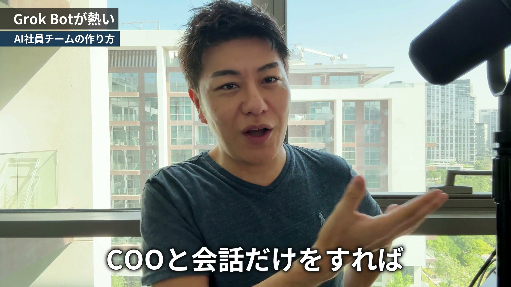

今週の投稿
ボタンを押すと、本文がコピーされ、写真や動画がスマホの共有画面に出ます。投稿したいアプリを選んで、本文を貼り付けてください。動画は押すまで再生されません。
InstagramInstagramリール（裏アカウント）
投稿文
ボット同士、AI社員同士でグループを組んで、業務を進めてくれるんです。 COOがいて、COOのタスクを管理する監視君がいて、ボット同士で会話しながら改善してくれるのが見てて面白い。 僕はCOOと会話だけをすれば、業務が成り立つ状態になりつつあります。
Facebook1日目 Facebook（文章だけの全文）
本文
第3世代。 いま、AIはここまで進んできました。 チャットで回答してくれるChatGPT、Claude、Gemini。 次に、パソコンの中をお掃除してくれたり、物を作ってくれたりするAIエージェント。Codex、Claude Code、Cursorですね。 そして第3世代として出てきたのが、Grok Botです。Metaが出してきているのがMeta Museですね。 AIは、こちらが指示を出して、答えを返してもらうもの。 そう思っていると、いま僕のところで起きていることは、ちょっと不思議に見えるかもしれません。 AI社員同士がグループで会話をしながら、仕事を改善して進めてくれているんです。 ボット同士で、こんなことを話しています。 「田中さんはこういう風なところで考えた方がいいから、こうした方がいいんじゃないか」 「もっとこういうところがミスってるから、ここは修正した方がいいんじゃないか」 見ていて、これが面白いんですよね。 実際に使ってみて、課題もまだまだあります。仕上げていかないといけないところも、当然あります。 それでも、かなり面白い会社経営ができそうだなと思っています。 AIを使い込んでいる人たちの次のステージで、経営者の方なんかは絶対ハマるんじゃないかなと。 僕がGrok Botを使ってみて何がいいのかを、動画でサラッと話しました。 AI社員のグループがどう動いているのかは、僕がしゃべっている動画で見てもらうのが早いと思います。 動画は、1件目のコメントに置いておきます。 ここからは、動画で話した中身を文章でまとめておきます。 ■ パソコンを閉じても、止まらない なんでGrok Botが熱いのか。 そもそもCursorを、イーロンマスクのSpaceXが買収したという流れがありました。 その次の世代として出てきたのが、Grok Botなんですよね。 概念的に言うと、クラウドコンピューター上でAIが自律的に動きます。 今まで使っていたClaude CodeやCodexは、そのパソコンのCPUとメモリを使って動きます。 だから自分のパソコンを閉じたら、動かなくなる。 もちろん対策として、リモートのPCやサーバーを契約して、常に止まらない環境を作ってきた人たちもいらっしゃいます。 Grok Botは、そんな難しい環境を作らなくても、オンライン上で24時間365日動くところに置かれているんです。 と言っておきながら、僕はMac miniを買ったんですけどね。 いよいよ、ドバイに置きっぱなしのパソコンを置いていこうかなと思っています。 では、Grok Botが万能かというと、そうでもありません。 確かメモリが16GBぐらいなので、すごい超高性能かと言われると、そうでもない。 処理には当然時間がかかりますし、重い作業はできません。できることと得意じゃないことがあるので、そこは使い分けです。 ■ メール、LINE、日程調整を任せている 実際に僕が何をやらせているのか。 Grok Botは一人につきメールアドレスを持てるので、自分でメールを受信して、リサーチして、整理しておいて、みたいなことができます。 LINEの返信も、ずっとさせています。 たとえば特典をお渡しするときに、コメントを書いてもらって、そのキャプチャーを取る。 そのキャプチャーを見て、いいねとなったら特典を渡す。 そういう、より複雑な返信もやらせています。 メールもカレンダーも全部見られるので、クライアントさんが日程調整をしてきたら、それを拾って回答していく。 ほかにも、自分のドバイ法人の経理など、いろんなデータを突っ込んでやらせています。 Chatworkも、別にリンクを発行して「これ返信しといて」と言えば、僕のアカウントから返信してくれます。 事務局用のアカウントのAPIも持たせているので、「事務局から返信しといて」ということもできるんです。 もうひとつ大きいのが、トリガーです。 ちなみにChatworkではできないんですけど、Slackだと、メッセージが来たのをトリガーに動き出すことができます。 僕の場合、Zoomの録画をいつも勝手に書き出して、動画も別の場所に保存しています。 保存が終わったら、Zoomのクラウドレコーディングから消す、という処理があります。 これが終わったあとに、さらにGrok Botへ飛ばす。 すると、Grok Botが議事録を書いて、勝手に共有していく。そういうこともできるわけなんですね。 外部から動きやすくて、指示も出しやすい。 僕のGrok BotとスタッフのGrok Botが会話して業務を進めていく、ということも、近い未来あるのかなと思っています。 ■ AI社員に、グループを組ませる Grok Botは、ボットという人を何人も入れることができます。簡単に言うと、AI社員みたいなものです。 僕だったら、ライター専用のボット、数値取得専門のボット。 そして田中祐一AIです。 田中祐一AIは、僕のPLCでコミュニティメンバーに配っている、僕の脳みそを移植したAIです。 ミーティングのたびに自分のナレッジを抽出して格納していて、中のナレッジは1万個くらいあります。 鮮度や、僕の発する品質度合いによってナレッジがティア分けされていて、それが呼び出される仕組みです。 こういうAI社員同士で、グループを組んで業務を遂行していくことができるんです。 COOというマネージャーがいて、そのCOOのタスクを管理する監視役がいる。 僕は、おーちゃん、かーちゃんという名前にしています。 おーちゃんとかーちゃんのグループが、全てのボットグループに指示を出していきます。 すると、それぞれのグループで会話をしながら、改善しながら進めていってくれます。 各ボットごとに記憶を持たせていて、グループの中で会話しながら改善されて、COOのところに上がってきます。 僕はCOOと会話だけをすれば、業務が成り立つ。そんな状態になりつつあります。 ■ 困るところまで、会社組織と全く一緒 「なりつつある」と書いたのは、課題がまだまだたくさんあるからです。 COOが結構忘れちゃう、という問題がありました。だから監視者をつけたんです。 さらに、COOが言ったことが引き継がれていない、ということも結構あるんですよ。 そこで今は、タスク管理板を使っています。 このタスクを各グループに引き継ぎましたよね、と確認して、イエスがつくまでちゃんと伝え続ける。 結構、会社組織と全く一緒なんです。 あなたの会社でも、言ったはずのことが引き継がれていない、ということはありませんか？ 僕がいまボットを増やしながら考えているのは、会社の組織をどうマネジメントするのか、ということです。 AIの話をしているのに、考えていることは組織の話になっている。 今は自分の案件でいろいろ回し始めているところで、広告側まではまだ仕込めていません。 このボットグループがうまく回っていったら、プロモーションの改善提案もできるだろうなと思っています。 ■ 全部をGrok Botにはしていない 正直、業務処理という意味では、基本的にはClaude CodeやCodexと変わりません。 僕はClaude Codeで、こういう仕組みを組んでいます。 Claude Code君が作ったあとに、添削用のサブエージェントがチェックする。 次にCodexを呼び出してチェックして、田中祐一AIもチェックする。 OKだったら、僕のところに上がってくる。 どの業務も、それなりに時間がかかりながらアウトプットが上がってきます。 それを、気軽に動きながら自律的にやってくれるのが、Grok Botのいいところだなと思っています。 ただ、AIのモデルとしては、Claude CodeのOpus 5.5とかの方が優秀だと僕は思っています。 自分のパソコンのCPUとメモリを使った方が、早いんですよね。 重い処理の代表格が、話者分離です。 セールス担当のトークを分析するときに、セールス担当とお客様のどっちの会話か分からなくなると、分析できないんですよね。 だから一個一個、話している人を分離する作業をしています。これが一つのセッションごとに30分とかかかるんです。 それをGrok Botでやっていたら、全然進みません。 だから、動画編集、話者分離、システム開発のようなガシガシやっていく作業は、僕のパソコンのCodexやClaude Codeで動かします。 窓口は、秘書としてのGrok Bot。実務は、僕のパソコン。 一方でライティングは、そんなに重くありません。 そこでGrok Botが動いているLinuxのターミナルで、僕のアカウントのCodexとClaude Codeを動かします。 そうやって、書かせたりもするんです。 Grok Bot内のPCで動かすのか、Grok Botから僕のパソコンの中のClaude CodeやCodexを動かすのか。 CPUとメモリの問題があるので、そうやって振り分けながら処理しています。 ■ 全媒体への展開は、まだ仕込んでいる最中 今後やりたいことも話しておきます。 この動画も、撮ったあとGrok Botに預けたら、全部に展開していくことができると思っています。 YouTube、ショート動画、インスタ、Threads、X、note、stand.fmです。 音声だけで撮ったら、音声用に動画が作られて全展開される。動画を撮ったら、動画から全展開される。 これがスマホからポチッとやって、メルマガも含めて全部配信されるようになったら面白いなと思って、いま仕込んでいる最中です。 Grok Botも、一回業務をちゃんと通してワークフローを確立しないと、ちゃんと動いてくれません。 インスタのアカウントはこれですよね、と一個一個定めていかなきゃいけないんです。 次の課題は、より細分化された部門を回していくこと。 顧客のプロモーション単位で、LP分析、セールスの分析、広告の分析がグループでできたらいいなと思っています。 一緒にプロモーションをやっているメンバーに、育てたGrok Botを貸し出すこともできるのかな、とか。 PLCのメンバーは田中祐一AIに結構添削させています。 それをチームの中に入れて、実際に会話しながら進めていくこともできるんじゃないかな、とか。 ここからまた1ヶ月、2ヶ月、AIと毎日会話しながら仕込んでいこうと思っています。 ■ Meta Museとの違いは、あくまで僕の私見 ここからは、あくまで僕の私見です。 Meta Museもいいと思います。基本的に優秀な秘書だと思います。 ただ、僕の見ている限りでは、Meta Museは基本的に人間の指示しか聞きません。 Grok BotのようにSlackで飛んできたものをトリガーに動き出す、といった自動的な動きは、設計上ないんじゃないかなと。 かといって、どっちが上という話でもないと思っています。優れている、優れていないは、当然どれもあります。 Grok Botもパワー不足ですし、使っているモデルがGrokになると思うので、Opus 5.5を使いたいなと思うこともある。 だから全部使っていきたいですし、いろいろつなぎ合わせて、自分の業務環境を作っています。 面白いのは、見ている世界による差です。 Xの世界の人から見たら、Grok Botなんて使って当たり前よ、という感じだと思うんです。 でもFacebookの世界では全然見ないなと思ったり。 逆にFacebookの方はMeta Museが盛り上がっていたりします。みんな、それぞれの文化圏の中で流派があるのかなと。 AIに関しては本当にどんどん進んでいて、好き嫌いもかなり分かれると思います。 そんな中で、もう人の作ったAIに乗っかるというのも、一つの手だと思いますよ。 僕はPLCのメンバーに、僕が土台となって、そういった環境を用意できたらいいなと思っています。 もちろん、やり方はいろいろあります。 あなたなら、最初のAI社員に、どんな仕事を任せますか？ 僕の中で今、Grok Botにハマっているので、その報告でした。 一緒に試しながら、積み上げていきましょう。 田中祐一 PS PLCのメンバーの土台になりたい、と書きました。 その土台の上で動いているメンバーが、実際にどんな人たちなのか。 本人たちが自分の言葉で話している成果報告の動画が、YouTubeに並んでいます。 こちらも、1件目のコメントに置いておきます。
1件目のコメント
AI社員に名前までつけてグループを組ませた話は、僕がしゃべっている動画で見てもらうのが早いと思います。 https://www.youtube.com/watch?v=n66GXD0FFBk PLCのメンバーが自分の言葉で話している成果報告の動画はこちらです。 https://www.youtube.com/@marketeryuichi/videos
Facebook2日目 Facebook（キャプチャ付きの一言）

本文
僕はCOOと会話だけをすれば、業務が成り立つ。 そんな状態に、なりつつあります。 COOといっても、AI社員です。 ライター専用のボット、数値取得専門のボット、田中祐一AI。 ボット同士でグループを組んで、会話して、改善して、COOのところに上がってきます。 「なりつつある」なのは、そのCOOが結構忘れちゃうからなんですけどね。
1件目のコメント
COOが忘れる問題にどう手を打っているかは、昨日の投稿に全文で書いています。
{1日目のFacebook投稿のURL}Facebook3日目 Facebook（1日目の投稿を引用して一言）
本文
Grok Botが熱い、と言いながら、全部をGrok Botにはしていません。 話者分離は一つのセッションごとに30分とかかかるので、そこは僕のパソコンで動かします。 窓口は、秘書としてのGrok Bot。 実務は、僕のパソコン。 あなたなら、どこまでをAI秘書に任せますか？
Facebook4日目 Facebook（ティーザー動画）
本文
AI社員同士でグループを組んで、会話しながら、改善して進めていく。 僕がGrok Botを見ていて、面白いなと思っているところを短く切り出しました。
1件目のコメント
Meta Museとの違いを僕がどう見ているかは、本編の後半で話しています。あくまで僕の私見です。
https://www.youtube.com/watch?v=n66GXD0FFBk
全文の記事はこちらです。
{1日目のFacebook投稿のURL}Threads1日目 Threads（感情の入口・URLなし）
本文（1つ目の投稿）
AI社員同士が会話しながら仕事を直していくのを見ていて、これ面白いなと思っています。
自己返信（2つ目）
Grok Botに、ボットを何人も入れています。 ライター専用、数値取得専門、そして田中祐一AI。 このボット同士がグループを組んで、こんな会話をするんです。 「もっとこういうところがミスってるから、ここは修正した方がいいんじゃないか」 僕はCOOと会話だけをすれば業務が成り立つ状態に、なりつつあります。 あなたなら、最初のAI社員にどんな仕事を任せますか？
Threads2日目 Threads（逆説の入口・URLなし）
本文（1つ目の投稿）
AI社員を増やしていったら、困りごとが人間の会社と全く一緒になってきました。
自己返信（2つ目）
COOが結構忘れちゃう。 だから監視者をつけました。 さらに、COOが言ったことが引き継がれていない、ということも結構あるんです。 AI社員の話です。
自己返信（3つ目）
今は、タスク管理板を使っています。 このタスクを各グループに引き継ぎましたよね、と確認して、イエスがつくまで伝え続ける。 ボットを増やしながら考えているのは、会社の組織をどうマネジメントするのか、ということです。
Threads3日目 Threads（答えの手前で止める・最後に動画）
本文（1つ目の投稿）
Grok Botにハマっているのに、重い仕事はGrok Botにやらせていません。
自己返信（2つ目）
Grok Botは確かメモリが16GBぐらい。 セールスのトークを分析するときの話者分離は、一つのセッションごとに30分とかかかります。 Grok Botでやっていたら、全然進まないんです。 窓口は、秘書としてのGrok Bot。 実務は、僕のパソコンのCodexやClaude Code。
自己返信（3つ目）
ライティングのように重くない仕事は、また別の動かし方をしています。 どの仕事をどっちに振り分けているのかは、動画で話しました。 https://www.youtube.com/watch?v=n66GXD0FFBk